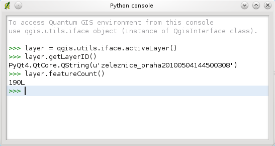

This document is intended to work both as a tutorial and a reference guide. While it does not list all possible use cases, it should give a good overview of the principal functionality.
Starting from 0.9 release, QGIS has optional scripting support using Python language. We’ve decided for Python as it’s one of the most favourite languages for scripting. PyQGIS bindings depend on SIP and PyQt4. The reason for using SIP instead of more widely used SWIG is that the whole QGIS code depends on Qt libraries. Python bindings for Qt (PyQt) are done also using SIP and this allows seamless integration of PyQGIS with PyQt.
There are several ways how to use QGIS python bindings, they are covered in detail in the following sections:
There is a complete QGIS API reference that documents the classes from the QGIS libraries. Pythonic QGIS API is nearly identical to the API in C++.
There are some resources about programming with PyQGIS on QGIS blog. See QGIS tutorial ported to Python for some examples of simple 3rd party apps. A good resource when dealing with plugins is to download some plugins from plugin repository and examine their code.
For scripting, it is possible to take advantage of integrated Python console. It can be opened from menu: Plugins ‣ Python Console. The console opens as a non-modal utility window:
The screenshot above illustrates how to get the layer currntly selected in the layer list, show its ID and optionally, if it is a vector layer, show the feature count. For interaction with QGIS environment, there is qgis.utils.iface variable, which is instance of QgisInterface. This interface allows access to the map canvas, menus, toolbars and other parts of the QGIS application.
For convenience of the user, the following statements are executed when the console is started (in future it will be possible to set further initial commands):
from qgis.core import *
import qgis.utils
For those which use the console often, it may be useful to set a shortcut for triggering the console (within menu Settings ‣ Configure shortcuts...)
Quantum GIS allows enhancement of its functionality using plugins. This was originally possible only with C++ language. With the addition of Python support to QGIS, it is also possible to use plugins written in Python. Great advantages over C++ plugins is the simplicity of distribution (no compiling for each platform needed) and easier development.
Many plugins covering various functionality have been written since the introduction of Python support. Plugin installer allows users to easily fetch, upgrade and remove Python plugins. See Python Plugin Repositories page for various sources of plugins.
Creating plugins in Python is simple, see Developing Python Plugins for detailed instructions.
Often when processing some GIS data, it is handy to create some scripts for automating the process instead of doing the same task again and again. With PyQGIS, this is perfectly possible — import the qgis.core module, initialize it and you are ready for the processing.
Or you may want to create an interactive application that uses some GIS functionality — measure some data, export a map in PDF or any other functionality. The qgis.gui module additionally brings various GUI components, most notably the map canvas widget that can be very easily incorporated into the application with support for zooming, panning and/or any further custom map tools.
Note: do not use qgis.py as a name for your test script — python will not be able to import the bindings as the script’s name will shadow them.
First of all you have to import qgis module, set QGIS path where to search for resources - database of projections, providers etc. When you set prefix path with second argument set as True, QGIS will initialize all paths with standard dir under the prefix directory. Calling initQgis() function is important to let QGIS search for the available providers.
from qgis.core import *
# supply path to where is your qgis installed
QgsApplication.setPrefixPath("/path/to/qgis/installation", True)
# load providers
QgsApplication.initQgis()
Now you can work with QGIS API - load layers and do some processing or fire up a GUI with a map canvas. The possibilities are endless :-)
When you are done with using QGIS library, call exitQgis() to make sure that everything is cleaned up (e.g. clear map layer registry and delete layers):
QgsApplication.exitQgis()
You will need to tell your system where to search for QGIS libraries and appropriate Python modules if they are not in a well-known location — otherwise Python will complain:
>>> import qgis.core
ImportError: No module named qgis.core
This can be fixed by setting the PYTHONPATH environment variable. In the following commands, qgispath should be replaced with your actual QGIS installation path:
The path to the PyQGIS modules is now known, however they depend on qgis_core and qgis_gui libraries (the Python modules serve only as wrappers). Path to these libraries is typically unknown for the operating system, so you get an import error again (the message might vary depending on the system):
>>> import qgis.core
ImportError: libqgis_core.so.1.5.0: cannot open shared object file: No such file or directory
Fix this by adding the directories where the QGIS libraries reside to search path of the dynamic linker:
These commands can be put into a bootstrap script that will take care of the startup. When deploying custom applications using PyQGIS, there are usually two possibilities:
The two deployment models can be mixed - deploy standalone application on Windows and Mac OS X, for Linux leave the installation of QGIS up to user and his package manager.